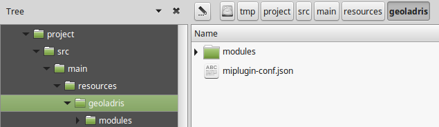

Migración
Migrando a la versión 6.x
A partir de la versión 6.0.0, todos los plugins deben contenterse en un subdirectorio con el nombre del plugin, dentro de geoladris o plugins (en función de su empaquetado; ver plugins).
Plugins empaquetados como .jar
Anteriormente, los recursos de un plugin empaquetado como jar estaban directamente dentro de geoladris, por lo que un plugin de este tipo que funciona con la versión 5.0.0 no será válido para la versión 6.0.0.
Para migrar a la versión 6.x bastará con crear un subdirectorio con el nombre de nuestro plugin dentro de geoladris y mover todos los recursos ahí.
Por ejemplo, para un plugin empaquetado como jar, en la versión 5.0.0 tendríamos algo como esto:

que deberíamos transformar a:

ModuleConfigurationProviders
En el caso de que se hayan desarrollado ModuleConfigurationProvider propios, estos deben añadirse a la aplicación de manera distinta. Anteriormente se añadían a un objeto Config en un ServletContextListener:
@Override public void contextInitialized(ServletContextEvent sce) { Config config = (Config) sce.getServletContext().getAttribute(AppContextListener.ATTR_CONFIG); config.addModuleConfigurationProvider(new LayersModuleConfigurationProvider()); }
Ahora se añaden directamente a una lista en el ServletContext:
@SuppressWarnings("unchecked") @Override public void contextInitialized(ServletContextEvent sce) { List<ModuleConfigurationProvider> providers = (List<ModuleConfigurationProvider>) sce.getServletContext().getAttribute(Geoladris.ATTR_CONFIG_PROVIDERS); providers.add(new LayersModuleConfigurationProvider()); }
Plugins empaquetados en el directorio de configuración
En este caso, los plugins ya estaban dentro de un subdirectorio de plugins en la versión 5.x, por lo que funcionarán en la versión 6.x sin ningún cambio.
Migrando a la versión 7.x
Plugins
La estructura de los plugins cliente ha cambiado completamente (ver plugins). Para la migración habría que:
- Mover módulos de
src/main/resources/geoladris/<plugin>/modulesasrc. - Gestionar las dependencias con
package.json/yarn.
Todavía es posible gestionar las dependencias de manera manual (en jslib en lugar de src/main/resources/geoladris/<plugin>/jslib), aunque en un futuro esta opción desaparecerá.
Aplicaciones
Las dependencias de las aplicaciones se gestionan ahora conjuntamente con Maven y yarn (ver aplicaciones), por lo que su definición y empaquetado cambian.
- Incluir dependencias cliente en
package.json. - Incluir dependencias servidor en
pom.xml. - Incluir dependencias híbridas (cliente y servidor juntos) en ambos ficheros.
- Configurar el plugin
com.github.eirslett:frontend-maven-pluginenpom.xml(ver ejemplo).
Una vez hecho esto, basta con ejecutar mvn package para minificar y empaquetar todos los recursos (cliente y servidor) en un único paquete .war.